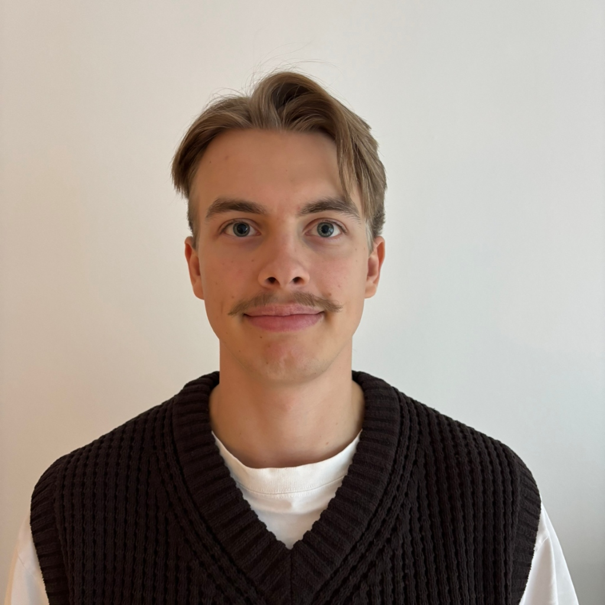

Digital Marketing Specialist
Jag studerar till Digital Marketing Specialist på IHM Business School och utvecklar mina kunskaper inom digital marknadsföring.
Jag studerar till Digital Marketing Specialist på IHM Business School i Göteborg med ett särskilt intresse för Paid Media, Performance Marketing och datadriven marknadsföring.
"En glad marknadsförare, marknadsför bäst"

Jag heter William Eriksson och studerar till Digital Marketing Specialist på IHM Business School i Göteborg. Mitt främsta intresse ligger inom Paid Media och Performance Marketing, där kreativitet, data och mätbara resultat möts.
Innan utbildningen arbetade jag inom lager och logistik och har även erfarenhet av kundservice och försäljning. Det har utvecklat min förmåga inom kundbemötande, problemlösning, struktur och att förstå olika kundbehov.
Vid sidan av studierna spelar jag handboll på elitnivå. Kombinationen av idrott, arbete och studier har lärt mig att arbeta målinriktat, prestera under press och hela tiden söka utveckling – egenskaper jag även tar med mig in i digital marknadsföring.
Jag är särskilt intresserad av annonsering, mätning, testning och optimering för att förstå vad som faktiskt skapar resultat.
Jag vill använda data för att förstå vad som fungerar, vad som kan förbättras och vilka beslut som bör tas härnäst.
Jag tror på kombinationen av data och kreativitet, där rätt budskap och innehåll behöver möta rätt målgrupp i rätt kanal.
Genom min utbildning på IHM bygger jag en bred grund inom digital marknadsföring, med ett särskilt intresse för områden där data, annonsering och optimering möts.
Mitt främsta intresseområde – datadriven annonsering med fokus på mål, KPI:er, resultat och kontinuerlig optimering.
Organisk och betald synlighet i sökmotorer, från sökordsanalys och SEO till annonsering via Google Ads.
Annonsering i sociala medier med fokus på målgrupper, budskap, kreativt innehåll och resultat.
Analys av trafik, användarbeteenden, KPI:er och resultat som grund för datadrivna beslut.
Strategiskt innehåll anpassat efter målgrupp, kanal, kundresa och marknadsföringsmål.
Användning av AI och digitala verktyg för research, idéarbete, analys, effektivisering och problemlösning inom digital marknadsföring.
Vid sidan av studierna spelar jag handboll på elitnivå. Idrotten har lärt mig att arbeta målinriktat, prestera under press, ta ansvar och fungera som en del av ett lag.
Jag har även arbetat med kommunikation och innehåll kopplat till handbollen, bland annat sociala medier, matchinlägg, intervjuer, kampanjer och sponsorrelaterat innehåll. Det har gett mig praktisk erfarenhet av att skapa kommunikation för en riktig målgrupp.
Jag studerar till Digital Marketing Specialist på IHM Business School och utvecklar mina kunskaper inom digital marknadsföring.
Från kundservice, ledarskap och lagidrott tar jag med mig erfarenhet av kommunikation, samarbete och att arbeta mot gemensamma mål.
Jag vill utveckla min förmåga att förstå målgrupper, skapa relevant innehåll och använda digitala kanaler för att bygga starka kundrelationer.
Från lagidrott och kundmöten till digital marknadsföring. Här är erfarenheterna som har format mig och det jag tar med mig in i nästa steg.
Genom NIU och min elitsatsning i handboll utvecklade jag disciplin, målmedvetenhet och samarbetsförmåga. Studier i ledarskap och psykologi gav mig förståelse för människor och gruppdynamik.
Som certifierad instruktör inom Hand The Ball genom HF Karlskrona besökte jag skolor och engagerade barn i rörelse och lek. Det gav mig erfarenhet av att leda, motivera och anpassa mitt bemötande.
På Call4U arbetade jag med kundservice, förhandling och att återvinna kunder. Tillsammans med mitt lagerarbete på OneMed utvecklade det min förmåga att kommunicera, ta ansvar och arbeta strukturerat.
Nu bygger jag vidare på min erfarenhet av människor och kommunikation genom studier i digital marknadsföring. Här utvecklar jag nya kunskaper och utforskar min framtida yrkesroll.
Jag vill omsätta mina kunskaper i praktiken, lära av andra och bidra med engagemang, nyfikenhet och förståelse för kundens behov.
Vill du prata praktik, digital marknadsföring eller en framtida möjlighet? Hör gärna av dig!